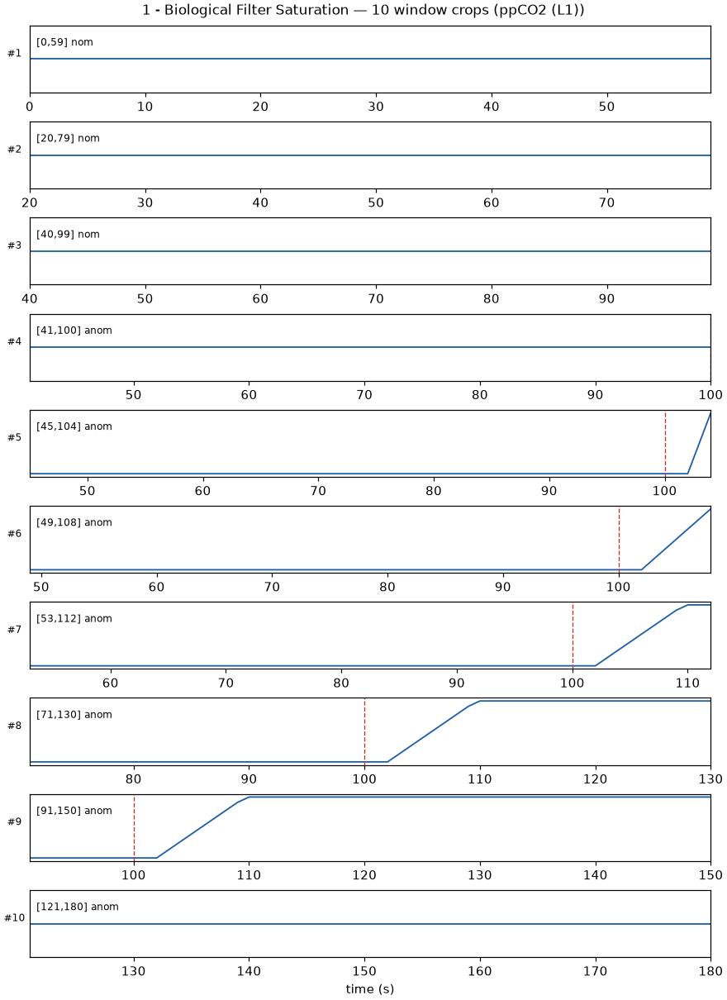

Stage-1 illustration · 60 s crops of ppCO₂ around inject (red). Label = nom / anom at the window end
Stride along each trajectory; early anomaly windows still contain mostly nominal history
Stratified by class (not by time): Stage 5 uses 80% / 20% → 3032 train · 750 val windows
Keeps rare anomaly classes in both sets; same generator family, so this is an in-distribution check